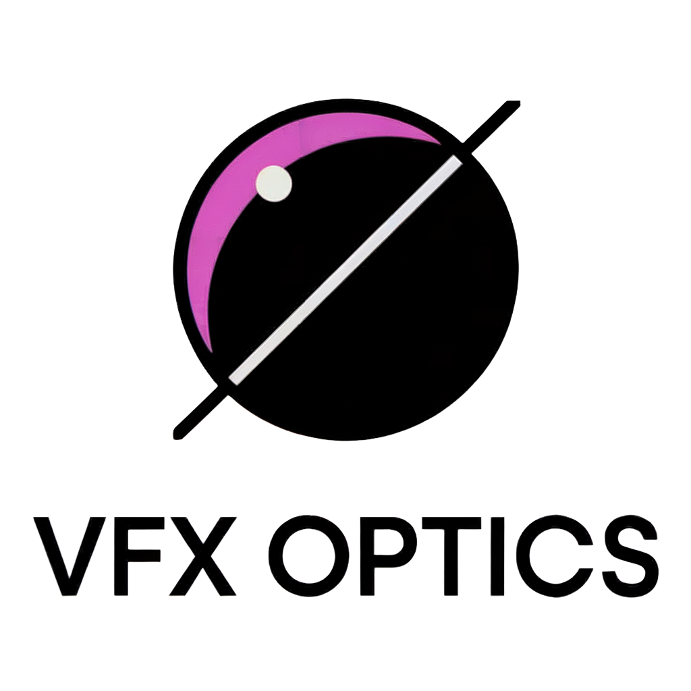

What is "VFX Optics"?

VFX Optics combines "VFX (Visual Effects)" and
"Optics".
It is a blog and channel dedicated to exploring game graphics and
real-time VFX.
The focus is on how the latest rendering technologies and research
can be applied to actual game production environments.
VFX Optics is divided into two main parts:
- Blog posts (this site) — Summaries and analysis of the latest graphics/rendering research, with production case studies
- YouTube tutorials — Shader techniques, particle effects, optics-based effects, optimizations, and other real-time VFX workflows
It aims to provide practical insights for aspiring Technical Artists and Graphics Engineers.
Released Games
- Ghost Detective (iOS, Android, Netflix)
- Claire's Chronicles (iOS, Android — sunset)
Live Service Games
- June's Journey (iOS, Android)
Education
-
Hongik University
Bachelor of Arts (BA), Art History and Theory (Kunstwissenschaft)
~